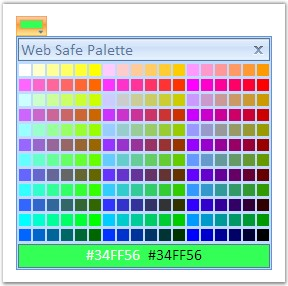
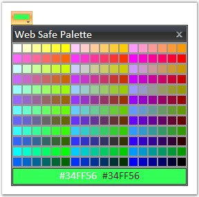
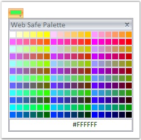
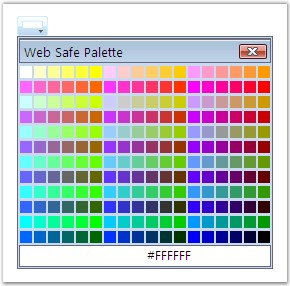
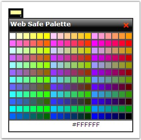
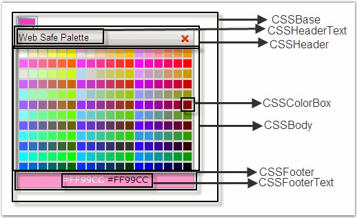

This section covers information on the following topics.
ColorPicker supports various pre-defined themes like Office2007 Blue, Office2007 Black, Office2007 Silver, Vista, and Black. You can set a pre-defined theme for the ColorPicker control using the AutoFormat property.
|
[ASPX]
<Syncfusion:ColorPicker ID="ColorPicker1" runat="server" AutoFormat="Office2007 Blue"/> |
|
[C#]
ColorPicker1.AutoFormat = "Office2007 Blue"; |
|
[VB]
ColorPicker1.AutoFormat = "Office2007 Blue" |
· Office2007 Blue

· Office2007 Black

· Office2007 Silver

· Vista

· Black

You can set custom styles for the ColorPicker control using the below given options.
CustomCSS
This will get the url of the CSS file (in String format) which can be used for the ColorPicker, instead of the default control defined in the CSS file.
|
[ASPX]
<Syncfusion:ColorPicker ID="ColorPicker1" runat="server" CustomCSS="~/Style1.css"/> |
|
[C#]
ColorPicker1.CustomCSS = "~/Style1.css"; |
|
[VB.NET]
ColorPicker1.CustomCSS = "~/Style1.css" |
ControlRootCSSClass
Sets the root CSS class name of the ColorPicker in String format.
CSSBase
Sets the base class name of the ColorPicker.
CSSHeader
Sets the class name for the header of the ColorPicker.
CSSHeaderText
Sets the class name for the header text of the ColorPicker.
CSSBody
Sets the class name for the body of the ColorPicker.
CSSColorBox
Sets the class name for the color box.
CSSFooter
Sets the class name for the footer.
CSSFooterText
Sets the class name for the footer text.

Figure 142